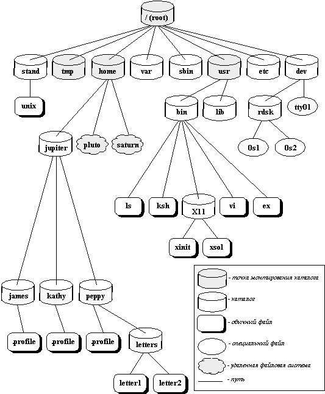
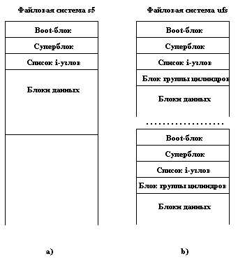

Как мы отмечали в разделе 2.1, понятие файла является одним из наиболее важных для ОС UNIX. Все файлы, с которыми могут манипулировать пользователи, располагаются в файловой системе, представляющей собой дерево, промежуточные вершины которого соответствуют каталогам, и листья - файлам и пустым каталогам. Примерная структура файловой системы ОС UNIX показана на рисунке 2.1. Реально на каждом логическом диске (разделе физического дискового пакета) располагается отдельная иерархия каталогов и файлов. Для получения общего дерева в динамике используется "монтирование" отдельных иерархий к фиксированной корневой файловой системе.
Замечание: в мире ОС UNIX по историческим причинам термин "файловая система" является перегруженным, обозначая одновременно иерархию каталогов и файлов и часть ядра, которая управляет каталогами и файлами. Видимо, было бы правильнее называть иерархию каталогов и файлов архивом файлов, а термин "файловая система" использовать только во втором смысле. Однако, следуя традиции ОС UNIX, мы будем использовать этот термин в двух смыслах, различая значения по контексту.
Каждый каталог и файл файловой системы имеет уникальное полное имя (в ОС UNIX это имя принято называть full pathname - имя, задающее полный путь, поскольку оно действительно задает полный путь от корня файловой системы через цепочку каталогов к соответствующему каталогу или файлу; мы будем использовать термин "полное имя", поскольку для pathname отсутствует благозвучный русский аналог). Каталог, являющийся корнем файловой системы (корневой каталог), в любой файловой системе имеет предопределенное имя "/" (слэш). Полное имя файла, например, /bin/sh означает, что в корневом каталоге должно содержаться имя каталога bin, а в каталоге bin должно содержаться имя файла sh. Коротким или относительным именем файла (relative pathname) называется имя (возможно, составное), задающее путь к файлу от текущего рабочего каталога (существует команда и соответствующий системный вызов, позволяющие установить текущий рабочий каталог).
В каждом каталоге содержатся два специальных имени, имя ".", именующее сам этот каталог, и имя "..", именующее "родительский" каталог данного каталога, т.е. каталог, непосредственно предшествующий данному в иерархии каталогов.

Рис. 2.1. Структура каталогов файловой системы
UNIX поддерживает многочисленные утилиты, позволяющие работать с файловой системой и доступные как команды командного интерпретатора. Вот некоторые из них (наиболее употребительные):
| cp имя1 имя2 | - копирование файла имя1 в файл имя2
|
| rm имя1 | - уничтожение файла имя1
|
| mv имя1 имя2 | - переименование файла имя1 в файл имя2
|
| mkdir имя | - создание нового каталога имя
|
| rmdir имя | - уничтожение каталога имя
|
| ls имя | - выдача содержимого каталога имя
|
| cat имя | - выдача на экран содержимого файла имя
|
| chown имя режим | - изменение режима доступа к файлу
|
Файловая система обычно размещается на дисках или других устройствах внешней памяти, имеющих блочную структуру. Кроме блоков, сохраняющих каталоги и файлы, во внешней памяти поддерживается еще несколько служебных областей.
В мире UNIX существует несколько разных видов файловых систем со своей структурой внешней памяти. Наиболее известны традиционная файловая система UNIX System V (s5) и файловая система семейства UNIX BSD (ufs). Файловая система s5 состоит из четырех секций (рисунок 2.2,a). В файловой системе ufs на логическом диске (разделе реального диска) находится последовательность секций файловой системы (рисунок 2.2,b).

Рис. 2.2. Структура внешней памяти файловых систем s5 и ufs
Кратко опишем суть и назначение каждой области диска.
- Boot-блок содержит программу раскрутки, которая служит для первоначального запуска ОС UNIX. В файловых системах s5 реально используется boot-блок только корневой файловой системы. В дополнительных файловых системах эта область присутствует, но не используется.
- Суперблок - это наиболее ответственная область файловой системы, содержащая информацию, которая необходима для работы с файловой системой в целом. Суперблок содержит список свободных блоков и свободные i-узлы (information nodes - информационные узлы). В файловых системах ufs для повышения устойчивости поддерживается несколько копий суперблока (как видно из рисунка 2.2,b, по одной копии на группу цилиндров). Каждая копия суперблока имеет размер 8196 байт, и только одна копия суперблока используется при монтировании файловой системы (см. ниже). Однако, если при монтировании устанавливается, что первичная копия суперблока повреждена или не удовлетворяет критериям целостности информации, используется резервная копия.
- Блок группы цилиндров содержит число i-узлов, специфицированных в списке i-узлов для данной группы цилиндров, и число блоков данных, которые связаны с этими i-узлами. Размер блока группы цилиндров зависит от размера файловой системы. Для повышения эффективности файловая система ufs старается размещать i-узлы и блоки данных в одной и той же группе цилиндров.
- Список i-узлов (ilist) содержит список i-узлов, соответствующих файлам данной файловой системы. Максимальное число файлов, которые могут быть созданы в файловой системе, определяется числом доступных i-узлов. В i-узле хранится информация, описывающая файл: режимы доступа к файлу, время создания и последней модификации, идентификатор пользователя и идентификатор группы создателя файла, описание блочной структуры файла и т.д.
- Блоки данных - в этой части файловой системы хранятся реальные данные файлов. В случае файловой системы ufs все блоки данных одного файла пытаются разместить в одной группе цилиндров. Размер блока данных определяется при форматировании файловой системы командой mkfs и может быть установлен в 512, 1024, 2048, 4096 или 8192 байтов.
Файлы любой файловой системы становятся доступными только после "монтирования" этой файловой системы. Файлы "не смонтированной" файловой системы не являются видимыми операционной системой.
Для монтирования файловой системы используется системный вызов mount. Монтирование файловой системы означает следующее. В имеющемся к моменту монтирования дереве каталогов и файлов должен иметься листовой узел - пустой каталог (в терминологии UNIX такой каталог, используемый для монтирования файловой системы, называется directory mount point - точка монтирования). В любой файловой системе имеется корневой каталог. Во время выполнения системного вызова mount корневой каталог монтируемой файловой системы совмещается с каталогом - точкой монтирования, в результате чего образуется новая иерархия с полными именами каталогов и файлов.
Смонтированная файловая система впоследствии может быть отсоединена от общей иерархии с использованием системного вызова umount. Для успешного выполнения этого системного вызова требуется, чтобы отсоединяемая файловая система к этому моменту не находилась в использовании (т.е. ни один файл из этой файловой системы не был открыт). Корневая файловая система всегда является смонтированной, и к ней не применим системный вызов umount.
Как мы отмечали выше, отдельная файловая система обычно располагается на логическом диске, т.е. на разделе физического диска. Для инициализации файловой системы не поддерживаются какие-либо специальные системные вызовы. Новая файловая система образуется на отформатированном диске с использованием утилиты (команды) mkfs. Вновь созданная файловая система инициализируется в состояние, соответствующее наличию всего лишь одного пустого корневого каталога. Команда mkfs выполняет инициализацию путем прямой записи соответствующих данных на диск.
Ядро ОС UNIX поддерживает для работы с файлами несколько системных вызовов. Среди них наиболее важными являются open, creat, read, write, lseek и close.
Важно отметить, что хотя внутри подсистемы управления файлами обычный файл представляется в виде набора блоков внешней памяти, для пользователей обеспечивается представление файла в виде линейной последовательности байтов. Такое представление позволяет использовать абстракцию файла при работе в внешними устройствами, при организации межпроцессных взаимодействий и т.д.
Файл в системных вызовах, обеспечивающих реальный доступ к данным, идентифицируется своим дескриптором (целым значением). Дескриптор файла выдается системными вызовами open (открыть файл) и creat (создать файл). Основным параметром операций открытия и создания файла является полное или относительное имя файла. Кроме того, при открытии файла указывается также режим открытия (только чтение, только запись, запись и чтение и т.д.) и характеристика, определяющая возможности доступа к файлу:
open(pathname, oflag [,mode])
Одним из признаков, которые могут участвовать в параметре oflag, является признак O_CREAT, наличие которого указывает на необходимость создания файла, если при выполнении системного вызова open файл с указанным именем не существует (параметр mode имеет смысл только при наличии этого признака). Тем не менее по историческим причинам и для обеспечения совместимости с предыдущими версиями ОС UNIX отдельно поддерживается системный вызов creat, выполняющий практически те же функции.
Открытый файл может использоваться для чтения и записи последовательностей байтов. Для этого поддерживаются два системных вызова:
read(fd, buffer, count) и write(fd, buffer, count)
Здесь fd - дескриптор файла (полученный при ранее выполненном системном вызове open или creat), buffer - указатель символьного массива и count - число байтов, которые должны быть прочитаны из файла или в него записаны. Значение функции read или write - целое число, которое совпадает со значением count, если операция заканчивается успешно, равно нулю при достижении конца файла и отрицательно при возникновении ошибок.
В каждом открытом файле существует текущая позиция. Сразу после открытия файл позиционируется на первый байт. Другими словами, если сразу после открытия файла выполняется системный вызов read (или write), то будут прочитаны (или записаны) первые count байтов содержимого файла (конечно, они будут успешно прочитаны только в том случае, если файл реально содержит по крайней мере count байтов). После выполнения системного вызова read (или write) указатель чтения/записи файла будет установлен в позицию count+1 и т.д.
Такой, чисто последовательный стиль работы, оказывается во многих случаях достаточным, но часто бывает необходимо читать или изменять файл с произвольной позиции (например, как без такой возможности хранить в файле прямо индексируемые массивы данных?). Для явного позиционирования файла служит системный вызов
lseek(fd, offset, origin)
Как и раньше, здесь fd - дескриптор ранее открытого файла. Параметр offset задает значение относительного смещения указателя чтения/записи, а параметр origin указывает, относительно какой позиции должно применяться смещение. Возможны три значения параметра origin. Значение 0 указывает, что значение offset должно рассматриваться как смещение относительно начала файла. Значение 1 означает, что значение offset является смещением относительно текущей позиции файла. Наконец, значение 2 говорит о том, что задается смещение относительно конца файла. Заметим, что типом данных параметра offset является long int. Это значит, что, во-первых, могут задаваться достаточно длинные смещения и, во-вторых, смещения могут быть положительными и отрицательными.
Например, после выполнения системного вызова
lseek(fd, 0, 0)
указатель чтения/записи соответствующего файла будет установлен на начало (на первый байт) файла. Системный вызов
lseek(fd, 0, 2)
установит указатель на конец файла. Наконец, выполнение системного вызова
lseek(fd, 10, 1)
приведет к увеличению текущего значения указателя на 10.
Естественно, системный вызов успешно завершается только в том случае, когда заново сформированное значение указателя не выходит за пределы существующих размеров файла.
Предыдущая глава | Оглавление | Следующая глава
Comments: [email protected]
Copyright © CIT